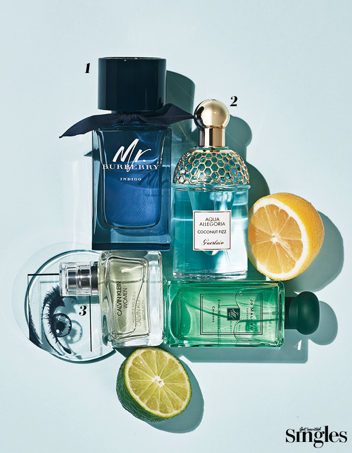

The scent of appeasing me after a business meeting.

Around 3 p.m., we recommend the cool, refreshing fragrance of the sitter if we choose a time when
anger
and dizziness accompany the manager's urging, and a smell that is sprayable. Fresh energy is added to
soothe fatigue and change the mood, such as biting a lot of juicy oranges or lemons.
1. Mr. Burberry Eau de Toilette |
A fresh, energetic scent was born with fresh citrus and woody notes. Once sprinkled, it reminds me of fresh
air flowing along the coast of England. 100ml 130,000 won.
2. Guerlain Aqua Elgaria Coconut Fizz Eau de Toilette |
A fruity citrus fragrance combining bergamot and coconut gives the tropical garden an exotic and fresh feel.
75ml 100,000 won.
3. Calvin Klein Woman Eau de Toilette |
The top notes of lemon, cassis bud, raspberry and pink pepper represent women's affirmation and confidence.
50ml 82,000 won.
4. Jo Malone London Star Magnolia Cologne |
Magnolia petals, orange blossoms, lemon and ginger flavors convey the delightful and enchanting fragrance,
announcing the beginning of spring. 100ml 194,000 won.